01몽실몽실한 랜덤 컬로,
몽실몽실한 랜덤 컬로,
한층 입체적인 이미지.
차분하게 내려앉던 머리에 크기와 방향이 다른 컬을 더했습니다. 몽실몽실한 질감과 컬 사이의 공간이 생겨, 옆모습까지 한층 입체적으로. 길이감의 개성과 부드러운 생기를 함께 표현합니다.
IMAGE DIRECTING STUDIO
얼굴형은 시작점입니다.
어울리는 머리의 기준은 더 있습니다.
얼굴·두상의 비율, 모질과 모량,
원하는 이미지와 평소 손질 습관을 함께 살펴
고객님께 맞는 디자인을 제안합니다.
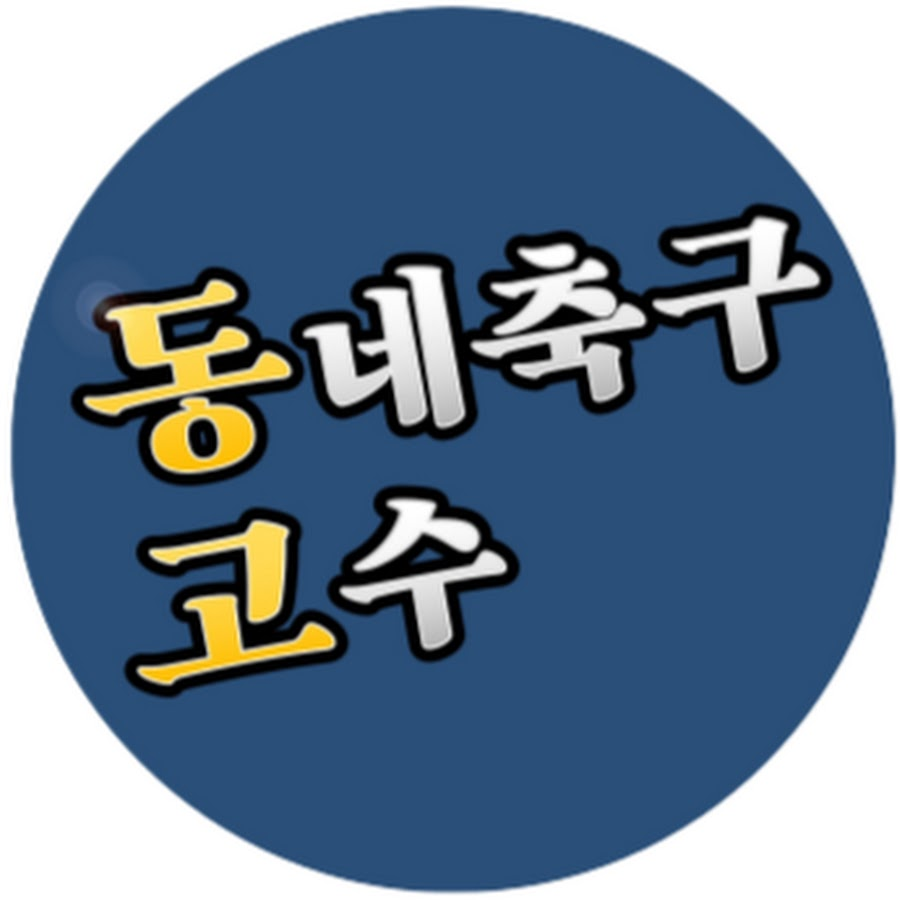
토르소 실제 시술01 / REAL CHANGE
앞머리와 볼륨, 옆머리 라인을 살펴보세요.
토르소의 실제 시술 전후입니다.
차분하게 내려앉던 머리에 크기와 방향이 다른 컬을 더했습니다. 몽실몽실한 질감과 컬 사이의 공간이 생겨, 옆모습까지 한층 입체적으로. 길이감의 개성과 부드러운 생기를 함께 표현합니다.


앞으로 향하던 결을 뒤·옆으로 흐르게 하고, 귀 주변을 정돈했습니다. 단정함에 생기 있는 인상을 더해, 새로운 만남에서 자신 있게 나를 표현하고 싶은 분께 제안합니다.


푹 내려앉았던 앞머리에 볼륨과 옆으로 흐르는 곡선을 더했습니다. 얼굴 주변에 입체감이 생겨 부드러우면서도 생기 있는 인상으로. 사진 속에서도 내 분위기를 또렷하게 남기고 싶은 날에 어울립니다.
BEFORE YOUR VISIT
사진으로 특징을 살피고 실제 스타일을 비교해 보세요.
마음에 드는 방향은 상담 카드로 준비할 수 있어요.
사진 없이 고민·취향·손질 습관부터 시작해도 좋습니다.
사진에서 보이는 기본 비율과 원하는 인상을 상담의 출발점으로 삼습니다. 실제 모질·두상·손질 습관은 방문 상담에서 함께 확인합니다.
토르소의 상담 기준 보기 ↓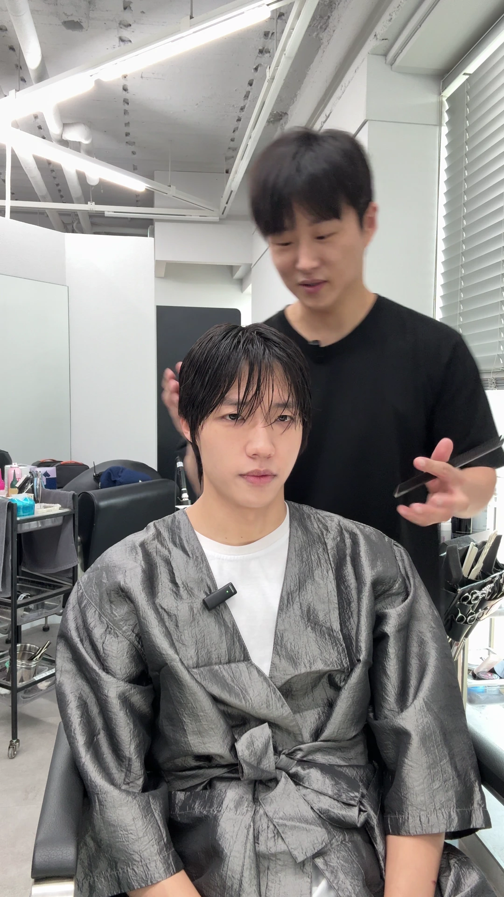
YOUR STYLE NOTE
토르소의 실제 시술 예시입니다. 같은 결과를 약속하는 맞춤 진단은 아닙니다.
정면과 옆모습의 비율, 눈·눈썹과 헤어라인의 여백, 모질·가마와 현재 길이를 직접 살펴 디자인과 시술 범위를 함께 정합니다.
복사한 메모를 예약 요청사항에 붙이거나, 이 화면을 방문할 때 보여주세요. 자동으로 매장에 전달되지는 않습니다.
시술을 정했다면 해당 메뉴, 고민 중이라면 ‘상담 후 시술결정’을 선택하세요. 담당자 선택이 어렵다면 미지정으로 예약할 수 있습니다.
02 / START WITH YOU
얼굴형부터 모발과 손질 습관까지.
지금 궁금한 부분에서 상담을 시작해 보세요.
헤어컨설팅이 궁금하다면
네. 얼굴형과 상·중·하안부의 비율, 눈·눈썹 사이의 간격, 광대와 관자놀이, 볼·턱선·귀의 위치까지 함께 살펴봅니다. 고객님이 살리고 싶은 이미지에 맞춰 앞머리의 길이와 방향, 볼륨의 위치, 컬과 옆머리 라인을 제안합니다.
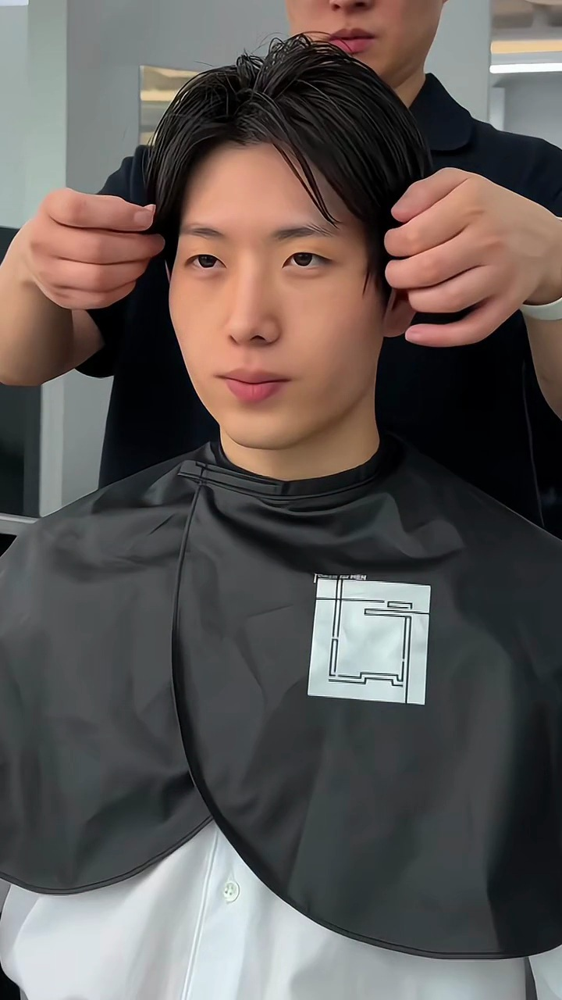
얼마나 드러낼지, 어느 방향으로 흐르게 할지.
볼륨을 더하거나 정리할 위치.
옆머리의 길이와 선을 연결하는 방법.
머리 시작선부터 눈썹 주변, 코 밑, 턱끝까지의 세로 흐름과 가로 폭을 함께 살핍니다. AI 생성 상담 설명용 이미지입니다.
정해진 비율에 맞추기보다, 원하는 이미지에 따라 앞머리와 볼륨의 위치를 함께 선택합니다.
사진의 표시는 일반적인 상담 관찰 위치를 설명하는 예시입니다. 실제 측정값이나 이 고객의 개별 상담 결과를 뜻하지 않습니다.
각도를 바꿔 살피고, 디자인으로 연결합니다.
짙기·길이·높낮이를 보고, 앞머리에 가려지거나 드러나는 정도를 살핍니다.
간격과 눈매를 함께 보며 앞머리의 길이와 무게감을 제안합니다.
옆쪽 여백과 관자 부위에 맞춰 옆머리의 폭과 볼륨을 조절합니다.
얼굴 윤곽 안에서 이목구비가 차지하는 위치와 주변 여백을 함께 살핍니다. 원하는 이미지에 따라 이마를 드러내는 폭, 앞머리의 흐름, 옆머리의 부피를 제안합니다.
어느 한쪽을 정답으로 정하지 않습니다. 고객님이 살리고 싶은 특징에서 출발합니다.
관자 부위의 깊이와 앞머리가 흐르는 방향을 함께 봅니다.
광대의 위치와 드러나는 정도에 맞춰 볼륨을 둘 위치를 찾습니다.
귀의 위치, 옆머리의 길이, 목선까지 이어지는 흐름을 살핍니다.
실제 상담에서는 좌우를 함께 살핍니다.
탑 포인트정수리의 가장 높은 곳
골든 포인트정수리에서 뒤쪽으로 둥글게 넘어가는 곳
가마의 위치와 머리가 자라는 방향부터 확인합니다. 이 예시에서는 앞뒤를 나누는 기준을 골든 포인트에서 탑 포인트 쪽으로 옮겨, 뒤쪽 볼륨을 만드는 시작 위치를 다시 잡았습니다.
탑이 뾰족하게 솟지 않도록 윗선을 정돈하고, 납작했던 뒤통수 위쪽에 볼륨을 더하는 방향을 비교해 보세요.
점은 디자인 기준 위치를 설명하는 예시이며 가마 자체를 뜻하지 않습니다. 실제 가마와 두상·모질·모량에 맞춰 길이와 층, 드라이 방향을 함께 조절합니다.
위에서 본 머리의 가로 폭과 앞뒤 길이의 관계를 설명하는 말입니다. 뒤통수의 한 부분만 보고 정하지 않습니다. 헤어 디자인은 모발의 실루엣을 조절해 원하는 균형을 찾는 과정입니다.
AI로 생성한 가상 모델로 관찰 위치와 디자인 방향을 설명합니다. 토르소의 실제 고객 사진·측정값·시술 전후가 아닙니다.
살펴본 특징은, 디자인의 근거가 됩니다.이마를 얼마나 드러낼지, 어디에 볼륨을 더할지, 귀와 턱선 주변을 어떻게 연결할지 설명드리고 함께 선택합니다.
살펴보기 → 디자인 제안 → 함께 선택 → 손질 안내
실제로 달라지는 부분 보기 ↑원하는 스타일이 있다면
좋아하는 부분을 먼저 여쭙고 얼굴·두상·모질과 평소 옷차림을 살펴봅니다. 앞머리 길이, 볼륨과 질감을 조정해 원하는 분위기를 고객님께 맞춥니다.
같은 스타일도, 어울리는 디테일은 다릅니다.
실제로 달라지는 부분 보기 ↑아직 정하지 못했다면
원하는 인상을 모르셔도 괜찮습니다. 현재의 매력을 살리는 방향과 새로운 인상을 더하는 방향을 제안하고, 어울리는 이유를 설명해드립니다.
선택은 고객님이, 선택의 근거는 함께.
실제로 달라지는 부분 보기 ↑손질이 걱정된다면
아침에 쓸 수 있는 시간과 드라이·제품 사용 습관부터 여쭙습니다. 그에 맞는 디자인을 제안하고 집에서 따라 할 손질 순서를 알려드립니다.
미용실에서의 완성, 내일 아침의 방법까지.
실제로 달라지는 부분 보기 ↑03 / FIND YOUR MOOD
질감과 컬, 라인이 만드는 분위기.
좋아하는 디테일을 상담에서 함께 나눠주세요.

에포트리스 · 에어리 · 내추럴
힘을 준 티 없이 자연스럽게 흐르는 결
시스루 · 세미리프 · 쉐도우 ↗

슬릭 · 테일러드 · 시크
정교한 실루엣으로 드러내는 선명한 남성미
슬릭댄디 · 드롭 · 크롭 ↗

빈티지 · 러기드 · 텍스처
거친 듯 입체적인 결로 드러내는 자유로운 개성
텍스처컷 · 빈티지 · 히피 ↗

클래식 · 댄디 · 타임리스
정돈된 라인과 균형 있는 볼륨이 만드는 품격
슬릭백 · 가일 · 포마드 ↗
04 / THE TORSO WAY
고객님께 맞춘 테크닉과 그 이유를 설명하고,
평소 생활에서 이어갈 손질법까지 함께 알려드립니다.
얼굴형과 두상·모질, 원하는 이미지를 살핍니다. 전체적인 균형과 라이프스타일도 함께 고려합니다. 평소 손질이 어려운 점과 습관, 손질에 쓸 수 있는 시간을 먼저 확인합니다.
같은 기술도 모질과 원하는 인상에 맞춰 다르게 적용합니다. 지금 어떤 과정을 진행하는지, 이 테크닉으로 어떤 변화가 생기는지 시술 중간중간 설명해드립니다.
처음 확인한 고객님의 라이프스타일과 손질 눈높이에 맞춰, 집에서 따라 할 수 있는 드라이 방향과 제품 사용 방법을 알려드립니다.
원하는 스타일이 있다면 고객님의 분위기와 얼굴·두상, 모질에 맞게 조정합니다. 아직 정하지 못했다면 평소 취향과 불편한 점부터 듣고, 어울리는 방향을 이유와 함께 제안합니다.
평소 원하는 이미지와 아침 손질에 쓸 수 있는 시간을 먼저 여쭙습니다. 단정한 모습이 좋은지, 개성을 더 표현하고 싶은지에 따라 길이·볼륨·질감과 손질 방법을 함께 제안합니다.
자주 입는 옷과 좋아하는 분위기를 함께 살펴봅니다. 패션의 느낌을 이어갈지, 머리로 다른 매력을 더할지 이야기한 뒤 얼굴·모질·손질 습관에 맞게 제안합니다. 사진이 없어도 편하게 설명해 주세요.
가을에 자주 입는 옷과 원하는 인상부터 여쭙습니다. 길이를 유지하며 결이나 앞머리만 바꾸거나, 커트·펌으로 분위기를 달리할 수 있습니다. 원하는 변화의 정도와 평소 손질에 맞춰 함께 고릅니다.
모자나 목도리를 자주 사용하는지, 출근 전 손질은 어떻게 하는지부터 확인합니다. 옷깃에 닿는 길이와 눌렸을 때의 손질까지 고려해 제안합니다. 지금 머리를 유지하고 싶다면 스타일링으로 조정할 방법도 함께 살펴봅니다.
현재 잘 어울리는 부분을 살리거나, 부드러운 인상에 선명한 라인을 더하는 등 새로운 매력을 시도할 수 있습니다. 얼굴형 하나로 단정하지 않고 전체적인 균형과 취향을 살펴, 변화의 정도를 함께 정합니다.
05 / IN THEIR WORDS
사진과 함께 남겨주신 경험을, 담당자별로 만나보세요.
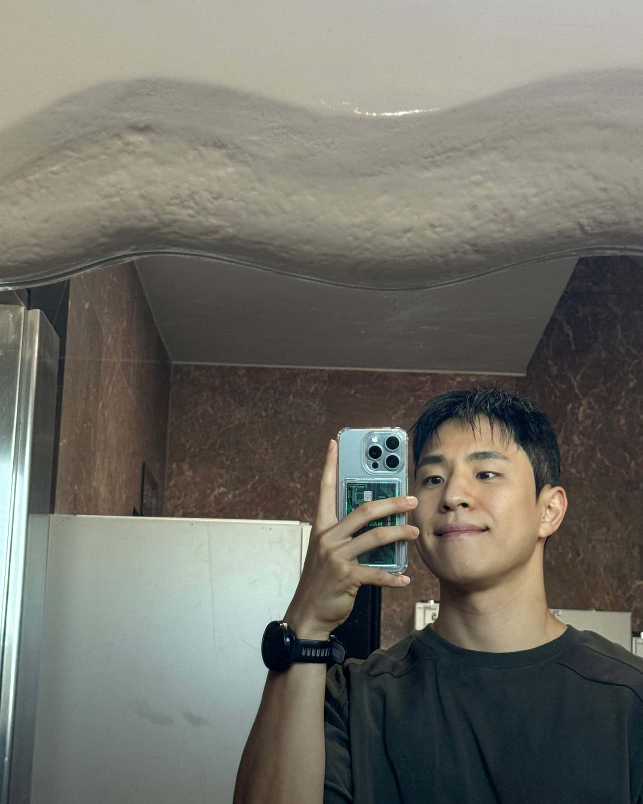
항상 세심하게 신경 써주시고 원하는 스타일에 맞게 스타일링을 해주시려고 합니다.🙂
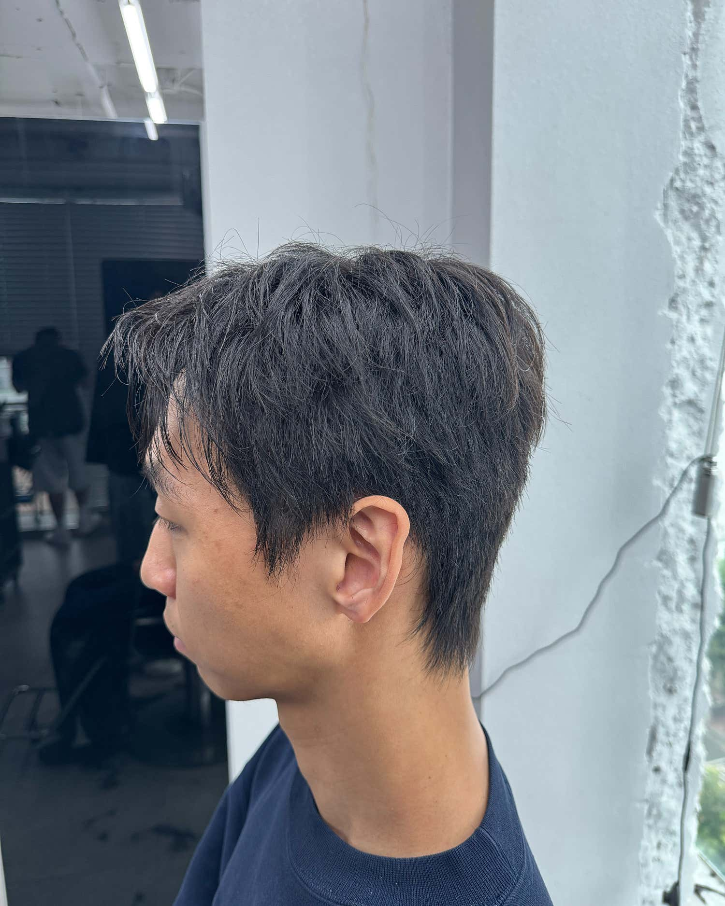
이번엔 평소랑 달리 텍스쳐컷 스타일로 부탁을 드렸는데 역시나 너무 맘에 들게 컷트해주셨네요😊
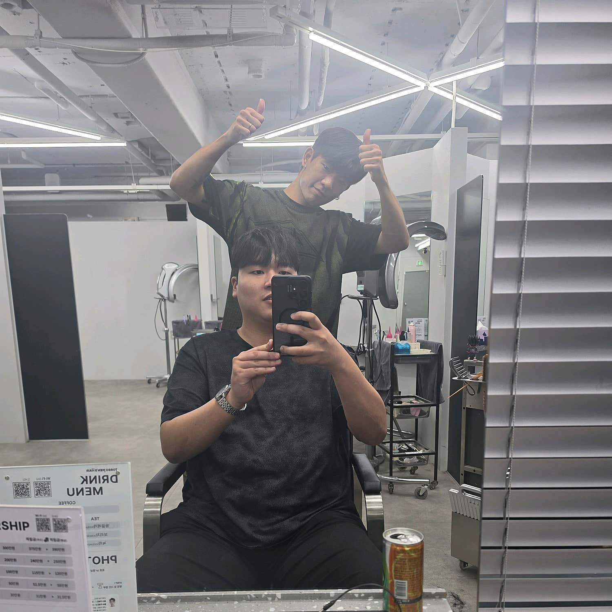
커트 라인도 제가 딱 원하는 대로 군더더기 없이 깔끔하게 떨어져서 대만족이에요. 덕분에 아침마다 머리 손질하기가 훨씬 수월해졌습니다.
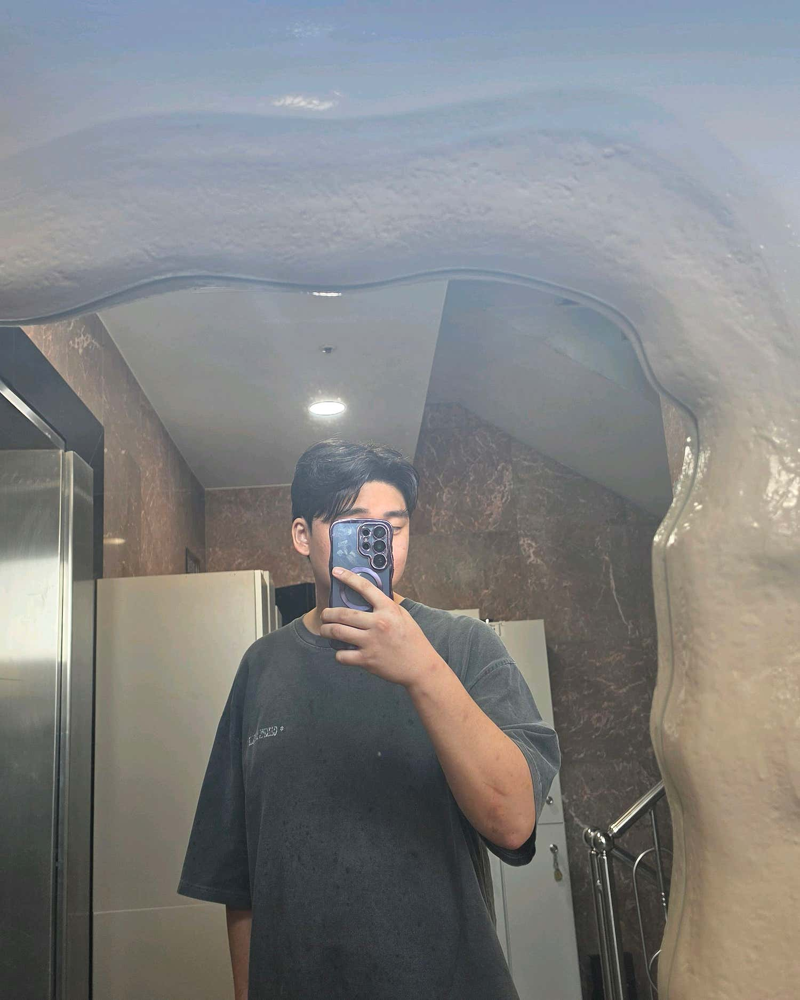
스타일 추천도 잘해주시고 , 머리 컷트도 예쁘개 해주셔서 만족하고 갑니다!! 추천드려요!!
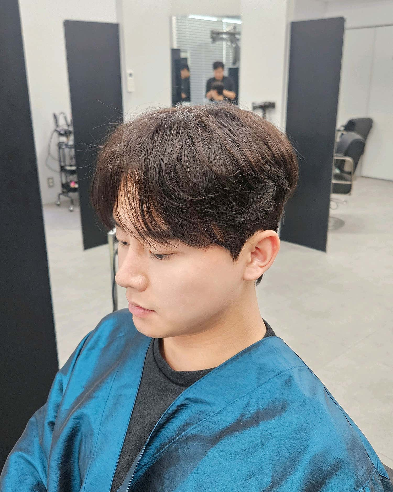
처음 상담부터 시술까지 정말 꼼꼼하게 해주시고, 특히 아이롱펌을 한 부분 한 부분 정성스럽게 해주시는 게 느껴졌어요.
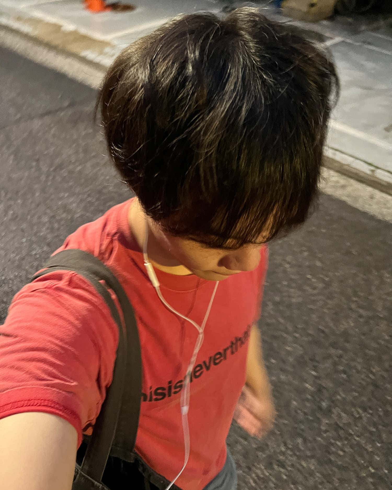
서울 올라와서 한 1년 ? 째 정착해서 잘 다니고 있습니다!
네이버 포토 리뷰 원문 일부 발췌 · 2026.10.01 확인
후기의 사진·글·작성자를 함께 확인했습니다. 표기된 날짜는 방문일입니다.
06 / MEET YOUR DESIGNER
담당자의 실제 작품과 디자인 방향을 함께 보세요.
고르기 어렵다면 디자이너 미지정으로 시작해도 괜찮습니다.
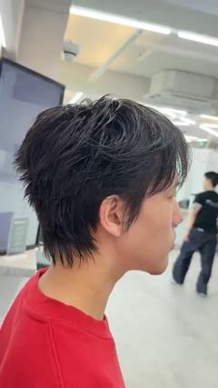
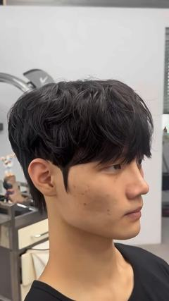
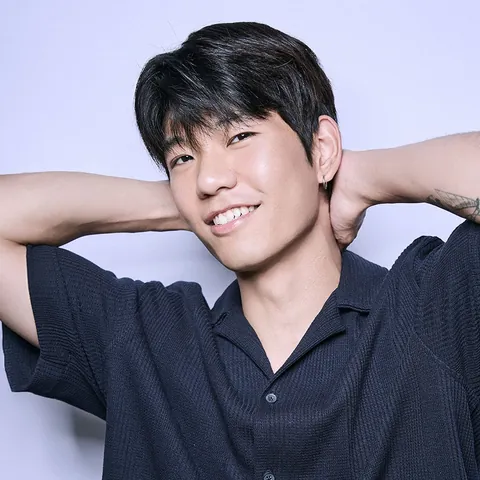
자연스러운 결을 살리는 디자이너
과하게 꾸민 느낌 없이, 질감과 움직임이 살아 있는 변화를 원한다면.
시스루댄디 · 쉐도우 · 텍스처진훈 선생님으로 예약 ↗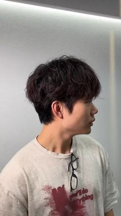
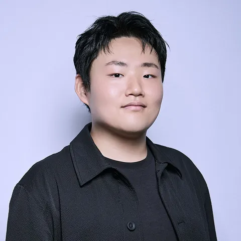
컬과 균형을 다루는 디자이너
펌의 분위기는 살리면서, 일상에서의 손질 방법도 함께 찾고 싶다면.
10만 유튜버 · 펌 · 클래식준영 선생님으로 예약 ↗OCTOBER · FIRST VISIT
담당자는 미지정으로, 스타일은 나에게 맞게.
예약 가능한 진훈·준영 수석디자이너 중 한 분이
상담부터 시술, 집에서의 손질까지 함께합니다.
첫 방문 · 진훈/준영 미지정 예약 · 10월 31일 시술분까지 · 탈색·드라이 제외 · 중복 할인 불가
Npay 결제 시 탈색·드라이를 제외한 모든 시술에 적용됩니다. 염색·추가 다운펌도 포함되며, 옵션별 내용과 금액은 예약 메뉴와 시술 전 상담에서 확인해 주세요.
담당자 지정 예약과 토르소 재방문 고객은 대상이 아닙니다. 다른 할인·카밍 체험 혜택과 중복되지 않으며, 행사 시행 전 완료한 시술에는 소급 적용되지 않습니다.
07 / YOUR NEXT STEP
네이버 예약에서 해당 시술 메뉴를 선택해 주세요. 원하는 모습이 고객님께 어울리도록 세부 디자인을 맞춰드립니다.
‘상담 후 시술결정’ 메뉴를 선택해 주세요. 고객님의 조건부터 살펴 스타일과 필요한 시술을 제안합니다.
메뉴는 위 기준으로 선택하고, 담당자는 ‘디자이너 미지정’으로 예약하셔도 괜찮습니다. 원하는 변화와 불편한 점부터 함께 살펴봅니다.
BEFORE YOU VISIT
고객님의 조건에서 어떤 길이·볼륨·질감이 원하는 인상에 맞는지, 커트로 가능한 부분과 다른 시술이 도움 될 부분을 설명합니다. 원하는 모습을 고르는 기준과 집에서의 손질 방법을 함께 알아갑니다.
상담 예약 안내 ↗원하는 모습과 현재 모발 상태를 보고 시술 범위와 가격을 상담합니다. 담당자별 메뉴 가격과 다운펌 추가 옵션을 먼저 확인하실 수 있습니다.
메뉴·추가 옵션 가격 확인 ↗상수역 4번 출구 도보 2분. 서울 마포구 독막로 68, 7층입니다. 첫 예약 10:00 · 마지막 예약 20:00, 매주 월요일 휴무입니다. 주차가 필요하면 방문 전에 문의해 주세요.
위치·연락처·주차 안내 ↗토르소 실제 시술